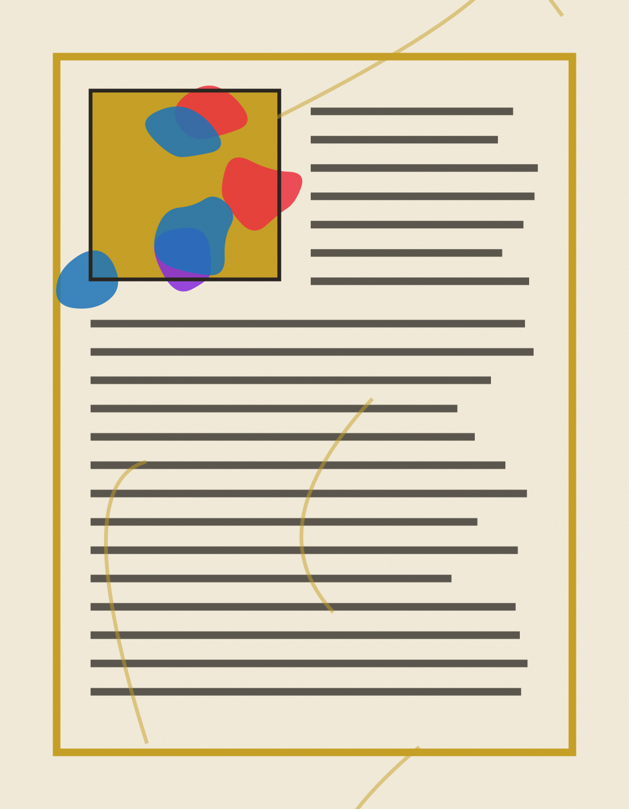

Chapter One
The Saint John's Bible

In 1998, Saint John's Abbey and University commissioned renowned calligrapher Donald Jackson to do something no Benedictine community had done in five hundred years: create a completely handwritten and illuminated Bible. Fifteen years, six scribes, and 1,127 pages of vellum later, The Saint John's Bible stands as one of the great book-arts achievements of the modern era.
The evening sale offers museum-grade illuminated folios from the project's fine-art edition — including the celebrated Genesis frontispiece, its seven bands of creation rising out of darkness into gold leaf that catches the light of the room exactly as the illuminators intended.
Lots 7–8 · Ink, gold leaf and pigment on vellum
Chapter Two
Bresnahan Pottery

Richard Bresnahan has been artist-in-residence at Saint John's Pottery since 1979, working in a practice of radical locality: clay dug within thirty miles of the abbey, glazes made from flax straw and sunflower-hull ash, and firings fueled by deadfall timber from the abbey forest.
His Johanna Kiln is the largest wood-burning kiln in North America. Each firing lasts ten days and marks every vessel with effects no glaze chemist could plan — the kiln itself is the final collaborator. The sale includes a nanban-glazed tea bowl and a sculpted vase, each a record of fire and patience.
Lots 9–10 · Wood-fired stoneware
Chapter Three
An Original Picasso
The quiet headline of the evening: an original work by Pablo Picasso, consigned from a distinguished private collection in support of the abbey and university.
In keeping with the consignor's wishes, the full catalogue entry — title, date, medium and estimate — will be announced in the room on the night of the sale. Guests wishing to preview the work privately may register their interest when they RSVP.
Lot 11 · Details announced at sale
Chapter Four
Private Collections

Rounding out the evening: fine art consigned from distinguished private collections across the Twin Cities — mid-century Minnesota landscapes, still lifes, and other works offered by collectors who share a commitment to the missions of Saint John's.
Lots 12–13 · Oil on board and canvas